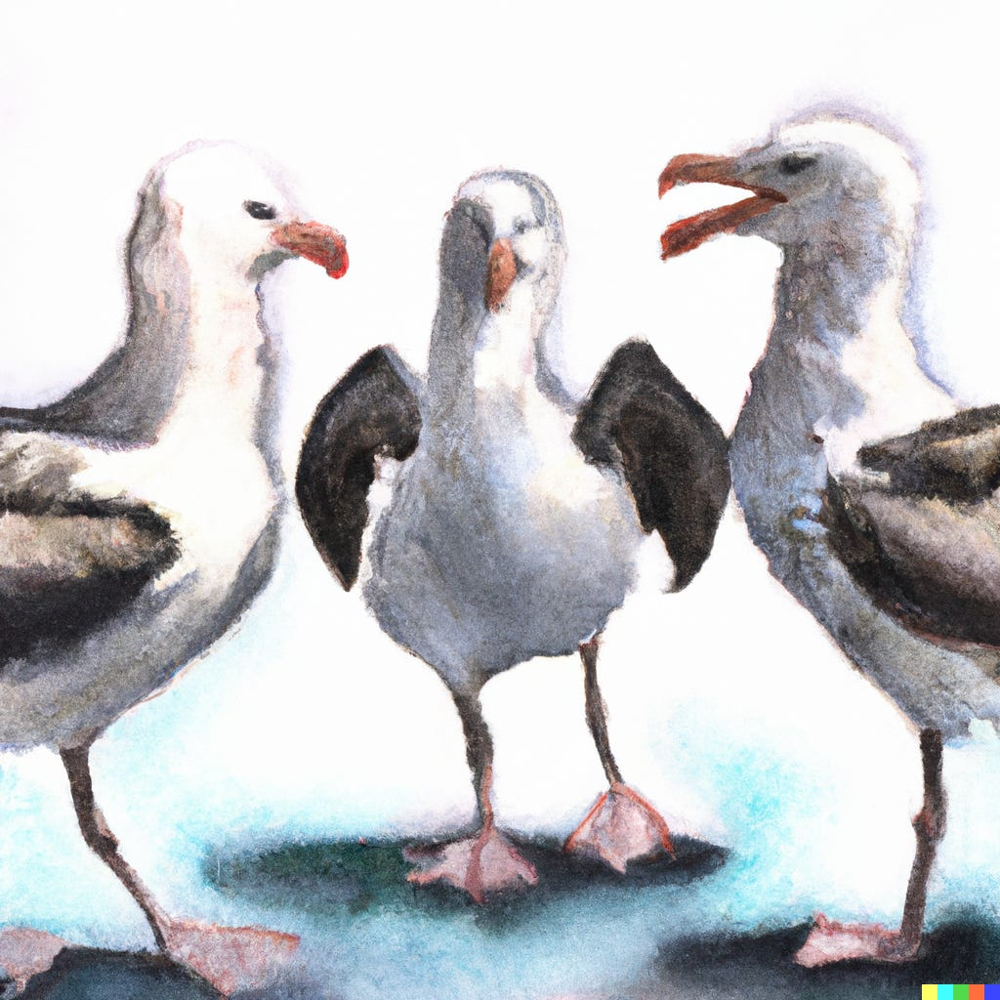

minimalpriora spinoff |
Updated | ||
|---|---|---|---|
| Author | Jan Kirchner | ||
My earliest best friend from school is named Jan. Later in high school, three out of four people in my group of closest friends were also called Jan. In university, I had three flatmates whose name was, I kid you not, also Jan[1]. We all had middle names that we used to differentiate ourselves, so throughout my childhood and teenage years, I was always called Jan Hendrik. It was very weird for me when I moved further south and people called me just Jan because there were no other Jans around. I almost felt like I was missing something.
[1]
(The name was insanely popular in Northern Germany around the time I was born.)
Three albatrosses stand opposite each other and accusatorially point at each other, watercolor painting. source
Why am I bringing this up? No particular reason.
Let’s put the punchline first: A few weeks ago, I joined the Alignment Team at OpenAI! 🎉 Everything is super exciting, and everybody is super nice to me! I’m working remotely now, but I hope to move to the bay area soon. Moving to the bay appears to be a very hip thing among EAs, so I’m looking forward to meeting as many interesting people as possible.
I have a great story to tell about how this new job came about, involving me teaching myself how to code in the hope of building an AI, reading about the AI box experiment, and studying brains to understand how cognition comes about. But I’m not a big fan of personal mythologies[2], so I’ll admit that I simply got seduced[3] by one of the most interesting[4] problems out there. And I’m pretty happy about getting to work on that full-time.
[4]
and (possibly/maybe?) important
[3]
or, less Romantically, nerd-sniped
[2]
The stories we tell ourselves about why we do what we do are probably largely just that - stories.
Accurate depiction of me trying to learn how to code while accidentally installing malware on my father’s computer. Courtesy @ DALLE.
My new job is also why I’ve been uncharacteristically quiet for the last two weeks on this Substack. The problem is not that I am “too busy to write”. I have previously professed my belief that I want to do all the things to maximize positive impact[5]. I haven’t changed my mind about that; the problem is that there is currently a lot of “renovation” going on in my head. I’m moving a lot of neuroscience knowledge from working memory to my cerebral basement, and I’m doing a lot of updates on all kinds of beliefs. I am working on some more posts, and I have more collaborations in the pipeline, but I’m running out of swap space very fast[6].
[6]
Now I realize that the previous paragraph is just a roundabout way of saying, “I’m too busy to write”… Oh well 😄 I am optimistic about returning to my previous schedule.
[5]
And the one way I feel comfortable claiming similarities between Scott Alexander and me is when he describes how hecannotstop.
me rn, source DALLE
So, I’ll be back, etc etc[7]! The IANniversary is coming up, I want to write some retrospective on my PhD, and there is a post on Hebbian learning and the covariance rule that feels relevant for modularity. I’m not ready to stop.
[7]
(I realize that I might want to go easy on the Terminator references in the future.)
Oh, and I’ve always wanted to say this, but it never made sense before. But now I can. Ahem: The views expressed on this blog are my own and do not represent the views of my employer. Wow, that felt good.